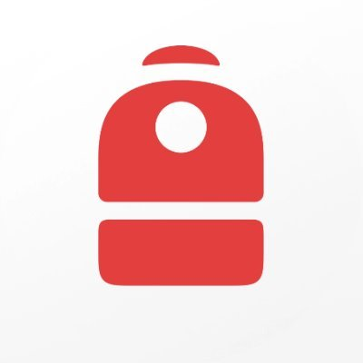

Keep a reserve before adding leverage
Maintain a buffer that can absorb a sharp market move or margin requirement.

BackpackConnect Backpack with read-only access to understand exposure, collateral, lending, borrowing, and what you can safely do next.
New to Backpack? Join now ↗Start with a public wallet scan, connect Backpack Exchange, or enter a few numbers manually.
Your reserve is visible, but active exposure deserves attention before adding more leverage.
Maintain a buffer that can absorb a sharp market move or margin requirement.
Some unallocated assets may be eligible for lending, subject to variable rates and terms.
Model a 10% market move before you increase spot or futures exposure.
This simplified scenario is not a liquidation prediction. It helps you compare decisions before placing a trade.
Balanced composition · read-only snapshot
Tap a concept to understand what the calculator is modeling.